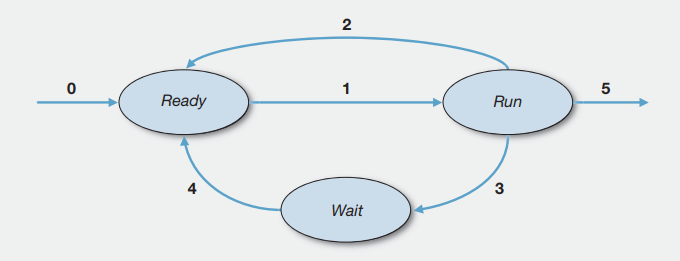

![Hosthello logo]()
Un programma è un insieme di istruzioni che devono essere eseguite per far si che il programma sia utile a qualcosa. Le istruzioni per diventare eseguibili devono diventare processi. I processi li esegue la CPU!
Il programma non è un processo, ma un’entità passiva contenente istruzioni che non hanno “vita”. Un processo è un’entità attiva che ha “vita”. Infatti un processo si genera, evolve, termina, produce figli, coopera con gli altri processi ecc… Il programma no.
Un programma diventa processo quando il suo file eseguibile viene caricato in memoria principale. Questo è un modo iniziale di generare processi.
Quando è in memoria principale, il processo invierà le istruzioni da eseguire (e i dati su cui lavorare) alla CPU. Questa memoria è detta anche memoria di lavoro o RAM.
Se il programma è un insieme di istruzioni, il processo è un’istanza del programma. Per istanza si intende l’esecuzione di un’unità/parte del programma. Il programma può essere quindi formato da uno o più unità, ossia da uno o più processi.
Se due processi sono associati allo stesso programma, sono comunque due sequenze d’esecuzione diverse.
Stati processo

Quando un processo entra in memoria RAM (transazione 0) è stato schedulato dallo scheduler a lungo temrine e si trova in uno stato di pronto. Vuol dire che è pronto per l’esecuzione, ma ancora non ha a disposizione la CPU (perchè non non gli è stata assegnata) per eseguire le istruzioni. In questo stato, il sistema operativo fa uso dello scheduler a breve terminare per determinare a quale processo assegnare la CPU. Lo scheduler usa delle politiche specifiche per decidere a quale processo asseganre la CPU.
È lo scheduler a breve termine che seleziona il processo dalla coda dei processi pronti e lo passa alla CPU.
Operazione di Dispatch: sono operazioni che si eseguono quando il processo passa dalla coda dei processi (stato di pronto) ed assegnato alla CPU (stato di esecuzione). Le operazioni sono:
- cambio contesto: detto context-switch, viene salvato il PCB del processo che lascia la CPU e sulla CPU viene caricato il PCB del processo che andrà in esecuzione.
- Passaggio alla modalità utente: quando il processo è nella coda dei processi, il sistema è in kernel-mode (esecuzione del codice del SO). Quando il processo è assegnato alla CPU il sistema è passato in modalità user-mode (esecuzione del codice utente).
- si esegure l’istruzione del processo entrato in CPU.
I casi dello stato di esecuzione
Quando lo scheduler sceglie il processo da mandare in esecuzione (transazione 1), il processo passa nello stato di esecuzione e la CPU è assegnata al processo. Il processo, tramite le istruzioni per cui è stato programmato, userà la CPU per compiere calcoli.
Un processo in esecuzione può ritrovarsi in uno dei seguenti casi:
può sdoppiarsi diventanto un processo padre che ha creato un processo figlio
può richiedere o subire interventi di I/O come la richiesta di input da tastiera o quando si muove il mouse
può subire un’interrupt ossia gli viene tolta la CPU in modo forzato
può terminare la sua esecuzione
Sdoppiamento e richieste di I/O
Quando si verificano il primo e secondo caso il processo passa in uno stato di attesa (transazione 3). Vediamo gli esempi seguenti:
quando un processo crea un figlio, deve attendere che questo termini la sua esecuzione. Il processo principale (il padre) passa nello stato di attesa mentre il figlio continua la sua esistenza nello stato di esecuzione usando la CPU.
quando un processo deve eseguire un’istruzione di I/O come ad esempio ricevere una carattere da tastiera, l’attesa nell’aspettare che l’utente prema il tasto la svolge appunto nello stato di attesa (transazione 3).
Ricordiamo che parliamo di processori velocissimi che svolgono operazioni alla velocità dei millesimi di secondo, per cui l’intervento dell’uomo (anche per premere un solo tasto) è un tempo molto lungo se considerato dal punto di vista del processore che compie operazioni in tempi brevissimi.
Continuando a considerare gli esempi precedenti, (es.1) il padre esce dallo stato di attesa quando il processo figlio ha terminato la sua esecuzione, oppure (es.2) il processo esce dallo stato di attesa quando ha ricevuto l’input che aveva richiesto. In entrambi gli esempi si ritorna nello stato di pronto (transazione 4) dove il processo si “accoda” agli altri processi presenti nella coda dei “processi pronti” per poi passare ancora nello stato di esecuzione (transazione 1). Essendo che il processo si ritrova nella coda dei processi pronti vuol dire che deve ancora eseguire delle istruzioni prima di terminare.
Nota: in base al tipo di processo lo stato di attesa contiene una serie di code di attesa chiamate code di dispositivo.
Multiprogrammazione
La multiprogrammazione permette di aumentare la percentuale d’uso della CPU perchè prevede la possibilità di mantenere in memoria più processi contemporaneamente in modo da essere schedulati ed assegnati alla CPU.
Quando si dice che un programma per essere eseguito deve essere prima caricato in memoria centrale (RAM) è vero in parte. Infatti non viene caricato totalemente in RAM, ma solo una parte ossia solo i processi ritenuti utili ai fini del funzionamento del programma. L’altra parte dei processi rimangono su una apposita area di memoria (pool dei processi o jobpool) del disco primario e prelevati quando necessari.
Lo stato di attesa è un esempio di cosa si intende per multiprogrammazione. Infatti quando un processo va in attesa, grazie alla multiprogrammazione il SO può prendere un altro processo in stato di pronto e mandarlo in esecuzione. In questo modo la CPU non rimane mai inattiva.
Senza la multiprogrammazione si sarebbe verificato che il processo in stato di attesa avrebbe bloccato gli altri processi pronti per andare in esecuzione. Questo perchè i processi in stato di pronto avrebbero dovuto aspettare che il processo in attesa terminasse il proprio evento (esempio se vi era una richiesta di I/O o un’attesa di terminazione di un figlio). In questo modo la CPU sarebbe rimasta inattiva fin quando l’evento (che aveva portato il processo in attesa) non fosse terminato.
La tecnica della multiprogrammazione appena descritta è su un sistema monoprocessore e permette di mantenere la CPU occupata il più possibile. Ciò fa credere all’utente che più processi siano in esecuzione contemporaneamente (multitasking), quando invece sono sempre processati sequenzialmente. La vera potenza del multitasking è da trovare nell’algoritmo di scheduling usato.
Nei sistemi multiprocessore è possibile lo scenario precedente ma in più è possibile anche l’esecuzione contemporanea di processi.
Interrupt
Per quanto riguarda il terzo caso, il processo può subire un interrupt dove la CPU gli viene tolta in modo forzato. In questo caso il processo può passare nello stato di pronto (transazione 2) oppure passare nell stato di attesa (transazione 3). Nel primo caso torna quindi in memoria RAM e inserito nella coda dei processi pronti. Nel secondo viene inserito in determiante code di attesa.
I processi di un programma sono di due tipi: CPU bound e I/O bound.
I primi dipendono fortemente dalla disponibilità della CPU e sono quei processi che svolgono elevate attività di elaborazione dati. Questi, se non forzati, non rilasciano mai la CPU fin che non finiscono la loro esecuzione e, se forzati a rilasciare la CPU, non vanno mai in stato di attesa ma passano in stato di pronto (transazione 2) accodandosi ai processi pronti per l’esecuzione.
I secondi dipendono principalmente dall’I/O. Possono rilasciare la CPU in modo autonomo per eseguire attività di I/O o possono comunque essere forzati. In etrambi i casi vanno in stato di attesa (transazione 3).
Che sia CPU bound o I/O bound se il processo rimane in esecuzione per più di un determinato “quanto” di tempo avverà un interrupt, anche se il processo è un figlio.
Time-sharing (o multitasking)
L’interrupt è un segnale di rilascio forzato della CPU gestito dal SO. Può essere di tipo software o hardware.
Il primo (tipo software) avviene nei calcolatori con più di un processore (multicore o più CPU) dove è il SO ad intervenire inviando un segnale di interruzione obbligando il processo a non usare più la CPU.
Il secondo (tipo hardware) avviene nei vecchi calcolatori a singolo processore (una sola CPU): ora, essendo che sia il SO che un processo per eseguire il proprio codice devono avere a disposizione la CPU, in un ambiente a singolo processore se un processo è in esecuzione si verificherà che il SO (non essendo in esecuzione perchè la CPU è gia in uso) non può intervenire per eseguire il codice che permettere di interrompere l’uso della CPU. Per cui prima che la CPU venga assegnata ad un processo, il SO attiva un dispositivo hardware che interrompe automaticamente l’esecuzione del codice del processo dopo un determinato periodo di tempo.
Ci sono vari tipi di interrupt, usati per scopi differenti da quello menzionato sopra. Ma questo tipo di interrupt è tipico dell’ambiente time-sharing (multitasking) dove l’interrupt viene eseguito dopo un determianto quanto di tempo. Ciò permette di eseguire (dare la CPU) in modo “sequenziale” i processi (uno dopo l’altro) . All’occhio umano sembra che i programmi lavorino simultaneamente e che i processi si sovrappongano, ma ciò è solo un’illusione data dall’altissima velocità con cui i processi si scambiano l’uso della CPU.
Terminazione
Nel quarto caso, se il processo termina esce dallo stato di esecuzione (transazione 5) e tutte le risorse a lui assegnate vengono liberate. Un processo che ha terminato l’esecuzione è un processoche ha eseguito tutte le istruzioni per cui era stato programmato.
Thread
Un processo a singolo thread è un programma che esegue un unico percorso di esecuzione dove l’esecuzione delle programma stesso avvine seguendo una singola sequenza di istruzioni.
Nei sistemi multicore i thread possono essere eseguiti in parallelo cosi da avere un processo composto da più thread (detto proceso multi-thread) dove ogni thread ha un proprio percorso di esecuzione differente dagli altri. In questo modo un processo può svolgere più compiti alla volta.
Kernel o nucleo
Le risorse principali gestite dal SO sono la memoria, i controller di I/O e il processore/i.Un aporzione di sistema operativo si trova nella memoria principale in cui troviamo il kernel. Il kernel contiene le funzioni più usate di frequente dal sistema operativo e in specifici archi di tempo altre porzioni di SO. La restante parte della memoria principale contiene i dati utente e programmi.
Il SO decide quando un dispositivo I/O deve essere usato da un programma in esecuzione controllandone l’accesso e l’uso dei file. Il processore stesso è una risorsa, quindi il SO deve determinare quante volte un processore debba essere impiegato per l’esecuzione di un determinato programma utente. Se il sistema è multi-processore, questa decisione viene esetesa a tutti i processori.
Nonprocess kernel (kernel separato)
Il kernel del SO è eseguito al di fuori di ogni processo. Con questo approccio se un processo in esecuzione è interroto, il PCB del processo viene salvato e il kernel riprende il controllo dell’intero sistema. Avendo il SO una sua partizione di memoria dedicata, può controllare le procedure di chiamata e come queste vendono eseguite. Può eseguire qualsiasi funzione e ripristinare i processi utente interrotti. Si occupa inoltre di gestire lo scheduling e il “dispatch” dei processi.
Il concetto chiave è che il processo è un concetto applicabile solo al al programma utente. Il processo non ha interazione “voluta” con il SO.
Kernel eseguito con i processi utente
Tutte le funzioni del SO sono eseguite virtualemente e in modo indipendente con il processo utente. In pratica il SO è una collezione di routines. Il processo ha un suo ambiente (chiamato immagine) di esecuzione dove l’utente può richiamare ed eseguire le routines del SO. Il SO può arrivare a gestire n immagini. Quindi le immagini saranno formate dai componenti standard di un processo (PCB, user Stack, Heap, sezione dati ecc..) e dalle routine del SO utili al processo.
Se un processo in esecuzione subisce interruzioni o trap (momento in cui il SO deve effettuare delle azioni), avviene il mode switch. In base alle circostanze il mode-switch cambia l’attività del SO da user-mode (esecuzione del codice utente) a kernel-mode (esecuzione del codice del sistema operativo) e viceversa. Nota: il mode-switch è l’alternativa leggera al context-swicth (situzione in cui il processo lascia la CPU in uso e il SO ne salva il PCB -> un PCB di un processo pronto viene caricato e il SO assegna la CPU a tale processo). Il processo va quindi in uno stato di nonrunning in modo da permettere al SO di operare (ed usare la CPU). Quando il SO termina le sue attività può decidere se eseguire il mode-switch (passando da kernel-mode a user-mode) in modo da riattivare il processo in stato di nonrunning o eseguire il context-switch in modo da far subentrare un nuovo processo.
Kernel come processo
Come per il precedente, il software del kernel è eseguito in kernel-mode e quello utente in user-mode ma invece di avere le funzioni del SO integrate con il processo utente, le funzioni kernel sono organizzate come processi separati. Rimane sempre l’alternativa context-switch in caso non si usi il mode-switch.
Questo modello incoraggia un uso modulare del SO. Ha il vantaggio di essere utile in ambienti multiproessore dove ogni i processi del SO possono essere eseguiti su processori dedicati, migliorando le performance.
Scheduling
Lo scheduling è l’attività svolta dal SO per aumentare l’uso della CPU, in mdo che non resti mai inattiva. È condizionato dal tipo di elaborazione da fare, CPU bound o I/O bound. Nel primo si verificano sequenze più lunghe di operazioni svolte dalla CPU (CPU burst) mentre nel secondo le CPU burst sono più brevi.
Ci sono due tipi di scheduler e quello più importante e usato e lo scheduler della CPU (o a breve termine). Questi prende il processo a cui assegnare la CPU dalla coda dei processi pronti. Questa coda non è necessariamente FIFO, ma può essere una coda con priorità o anche una lista concatenata. Nella coda dei processi pronti gli elementi sono presenti i PCB del processo (e non l’intero processo).
Tipi di scheduling
Se ne hanno 2 tipi:
senza prelazione dove la CPU rimane in uso al processo fino alla sua fine esecuzione o passaggio in stato attesa. È il tipo di scheduling presente nei SO prima del 1995 e spesso è l’alternativa migliore su determiate piattaforne odierne.
con prelazione (o cooperativo) dove la CPU viene forzatamente tolta al processo ed in uso sui SO dagli anni 1995 in poi. Per attuare la forzatura si usano ad es. i timer che danno luogo agli ambienti time-sharing dove il processo lascia la CPU dopo un quanto di tempo. Questo tipo di schedulign porta a race condition ossia quando un dato condiviso tra processi è modificato da più parti alterandone il significato per il processo che lo riusa trovandolo incoerente da quando lo aveva lasciato. A tale scopo nasce la necessità si usare sistemi di sincronizzazione per l’accesso ai dati condivisi.
Semafori
I semafori a valori binari vengono utilizzati per la mutua esclusione ossia un processo alla volta può accedere alla sezione critica.
I semafori a valori interi trovano applicazione nel controllo dell’accesso ad una data risorsa presente in un numero finito di esemplari. Il semaforo è inizialmente impostato al numero di risorse disponibili.